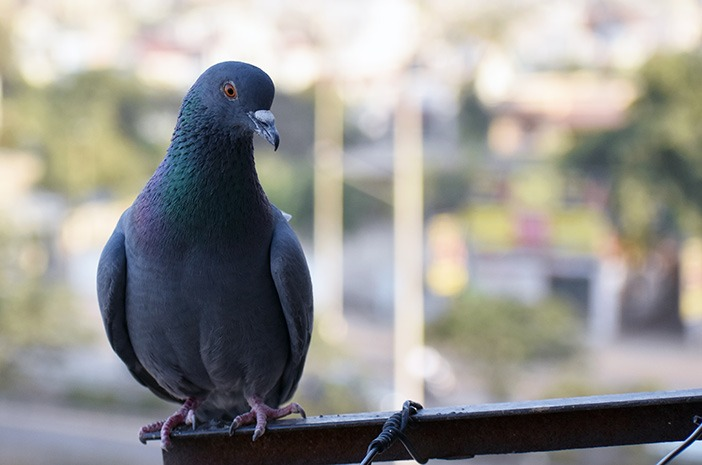

Selama lebih dari satu dekade, saya telah mendedikasikan waktu untuk memahami genetika, perawatan, dan estetika burung merpati hias. Apa yang bermula sebagai hobi masa kecil kini telah berkembang menjadi kurasi profesional terhadap beberapa trah merpati paling langka.
Fokus utama saya adalah menjaga kemurnian ras dan memastikan setiap burung mendapatkan perawatan standar internasional, mulai dari nutrisi hingga pelatihan fisik yang terukur.
